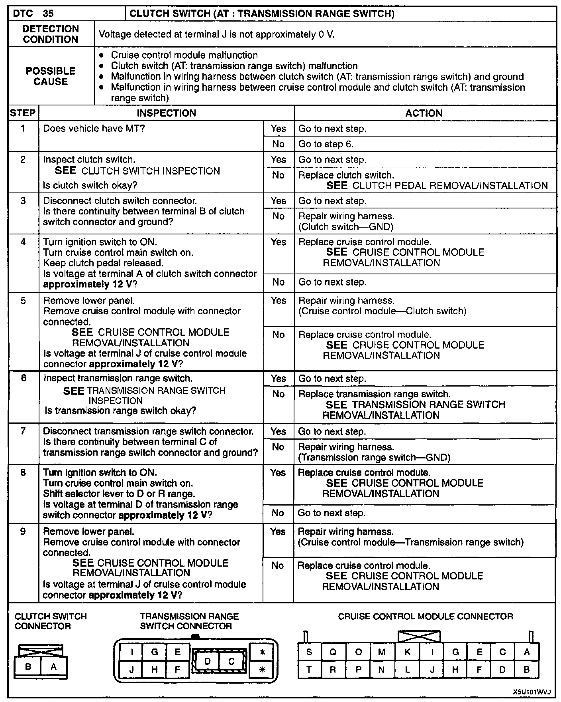

Operation CHARM
: Car repair manuals for everyone.
Home
>>
Mazda
>>
1999
>>
MX-5 Miata L4-1.8L DOHC
>>
Repair and Diagnosis
>>
Cruise Control
>>
Clutch Switch
>>
Testing and Inspection
Clutch Switch: Testing and Inspection
DTC 35 Clutch Switch (AT: Transmission Range Switch):
